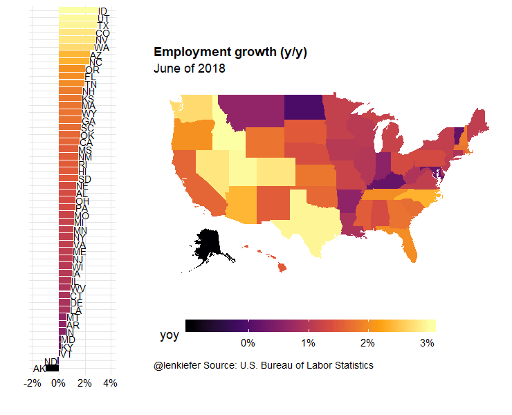
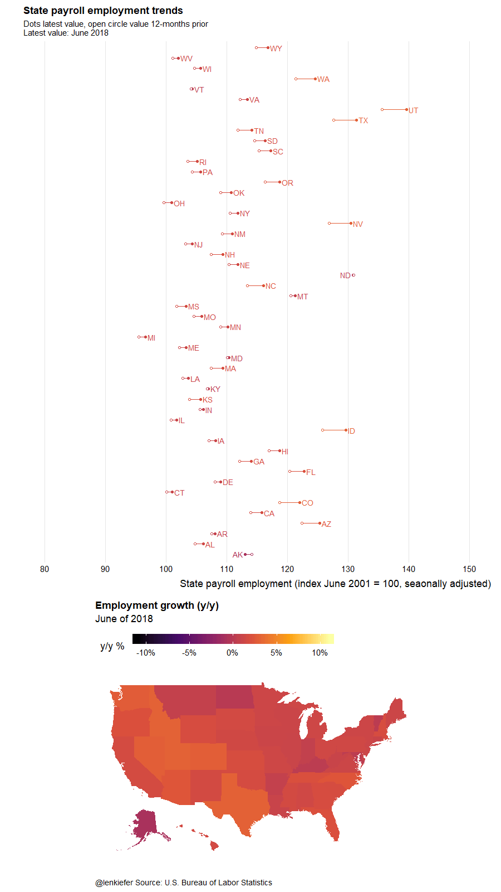

Today was JOLTS Tuesday, when the U.S. Bureau of Labor Statistics releases updated data from the Job Openings and Labor Turnover Survey. I was talking about it earlier today, but before we get into that…
If you care about dataviz check this out
I saw this on Twitter today via Jon Schwabish.
Link to a handy dataviz cheatsheet outlining Jon’s core dataviz principles. Prints out nicely on pdf.
Back to the JOLTS.
JOLTS trends
Earlier today I shared some images based on the JOLTS data:
#JOLTS #dataviz
— Leonard Kiefer (@lenkiefer) August 7, 2018
job openings by industry pic.twitter.com/HZu7UQqfzT
You can find R code for most of the visualizations here in this post. Indeed, I used that very code today to update my chart within minutes of the BLS posting the JOLTS data to their webpage. It worked great.
In this post I want to share some R code for different visualizations that look at employment trends by state. We’ll also try out a new (for this blog) R package for making choropleth maps of the United States.
Get data
We’ll get our data from the BLS via flat text files. We can read them in with the data.table library’s fread() function.
# load libraries ----
suppressPackageStartupMessages({
library(data.table)
library(tidyverse)
library(fiftystater)
library(lubridate)
library(extrafont)
library(ggridges)
library(geofacet)
library(scales)
library(cowplot)
library(gifski)
library(tweenr)
})Then get data from BLS:
Code for data
# load data ----
# get data via BLS.gov
df_st <- fread("https://download.bls.gov/pub/time.series/sm/sm.data.55.TotalNonFarmStateWide.All")
df_series <- fread("https://download.bls.gov/pub/time.series/sm/sm.series")
df_area <- fread("https://download.bls.gov/pub/time.series/sm/sm.area", col.names=c("area_code","area_name","blank"))
df_state <- fread("https://download.bls.gov/pub/time.series/sm/sm.state", col.names=c("state_code","state_name","blank"))
# add a date field
# only keep if month < 13 M13 corresponds to annual data
df_st <- df_st[month<13,]
df_st[,month:=as.numeric(substr(period,2,3))]
df_st[,date:= as.Date(ISOdate(year,month,1))]
dt <-
left_join(df_st, df_series, by="series_id") %>%
left_join(df_state, by="state_code") %>%
# join state abbreviations from build in vectors state.name and state.abb
left_join(data.frame(state_name=state.name,state_abb=state.abb), by="state_name") %>%
data.table()
dt.plot <-
dt %>%
group_by(state_name) %>%
filter(data_type_code==1,
seasonal=="S",
area_code==0 # 0 are statewide stats
) %>%
mutate(
value=as.numeric(value),
yoy=value/lag(value,12)-1,
v2001=100*value/value[date=="2001-06-01"], # indexed to June 2001
vlag=lag(v2001,12) # index value lagged 12 months
) %>%
data.table()# make a static plot
Let’s first make a static plot.
We’re going to use the fiftystater package to make a map for the United States and combine it with a bar chart. See this vignette for more on using fiftystater.
I like this kind of composite visualization. By themselves, maps are often not the best visualization. However, if we combine them with another chart, like a bar, we can use the map to explore spatial variation. For example, we can see that employment growth is generally stronger out west.
Code for static plot
in.df<- dt.plot[date==max(dt.plot$date) & !is.na(state_abb),]
# compute limits for axis
yoy.max <- max(in.df$yoy)
yoy.min <- min(in.df$yoy)
g.map <-
ggplot(in.df,
aes(map_id=tolower(state_name)))+
geom_map(aes(fill=yoy), map=fifty_states)+
expand_limits(x = fifty_states$long, y = fifty_states$lat) +
coord_map() +
scale_x_continuous(breaks = NULL) +
scale_y_continuous(breaks = NULL) +
labs(x = "", y = "", title="Employment growth (y/y)",
subtitle=paste0("June of ",2018),
caption="@lenkiefer Source: U.S. Bureau of Labor Statistics") +
theme(legend.position = "bottom",
plot.title=element_text(hjust=0),
plot.caption=element_text(hjust=0),
legend.key.width=unit(2,"cm"),
panel.background = element_blank())+
scale_fill_viridis_c(option="B", labels=percent, name="y/y % change ")
g.bar <-
ggplot(in.df,
aes(y=yoy,
fill=yoy,
label=state_abb,
hjust=ifelse(yoy>0,0,1),
x=fct_reorder(state_name,yoy)))+
geom_col()+coord_flip()+
geom_text()+
theme_ridges()+
labs(x="",y="")+
scale_fill_viridis_c(option="B", labels=percent)+
theme(legend.position="none",
axis.text.y=element_blank(),
axis.ticks.y=element_blank())+
scale_y_continuous(limits=c(yoy.min-0.01,yoy.max+0.01),labels=percent) plot_grid(g.bar,g.map, rel_widths=c(1,3),ncol=2)
Now we can wrap this code in a function to make an animation. We’ll use the tweener library for smooth animations.
Animation 1 code
# function for plotting
plotf <- function(i, tween_df=tween.df){
in.df<- filter(tween_df, .frame==i)
yoy.max <- max(in.df$yoy)
yoy.min <- min(in.df$yoy)
yy<- head(in.df,1)$year
g.map <-
ggplot(in.df,
aes(map_id=tolower(state_name)))+
geom_map(aes(fill=yoy), map=fifty_states)+
expand_limits(x = fifty_states$long, y = fifty_states$lat) +
coord_map() +
scale_x_continuous(breaks = NULL) +
scale_y_continuous(breaks = NULL) +
labs(x = "", y = "", title="Employment growth (y/y)",
subtitle=paste0("June of ",yy),
caption="@lenkiefer Source: U.S. Bureau of Labor Statistics") +
theme(legend.position = "bottom",
plot.title=element_text(hjust=0),
plot.caption=element_text(hjust=0),
legend.key.width=unit(2,"cm"),
panel.background = element_blank())+
scale_fill_viridis_c(option="B", labels=percent)
g.bar <-
ggplot(in.df,
aes(y=yoy,
fill=yoy,
label=state_abb,
hjust=ifelse(yoy>0,0,1),
x=fct_reorder(state_name,yoy)))+
geom_col()+coord_flip()+
geom_text()+
theme_ridges()+
labs(x="",y="")+
scale_fill_viridis_c(option="B", labels=percent)+
theme(legend.position="none",
axis.text.y=element_blank(),
axis.ticks.y=element_blank())+
scale_y_continuous(limits=c(yoy.min-0.01,yoy.max+0.01),labels=percent)
plot_grid(g.bar,g.map, rel_widths=c(1,3),ncol=2)
}
myf <- function(yy=2018){
in.df<- dt.plot[year==yy & month==6 & !is.na(state_abb)] %>%
select(state_name,yoy,v2001,vlag,state_abb,value,date) %>%
map_if(is.character,as.factor) %>% as.data.frame() %>%
mutate(year=as.factor(yy))
}
mylist<-lapply(c(2018,seq(2001,2018),2018),myf)
tween.df <- tween_states(mylist,tweenlength=1,statelength=2, ease=rep('cubic-in-out',200), nframes=350)
# number of frames
N <- max(tween.df$.frame)
# change this
# Set to your directory
mydir<-"YOUR_DIRECTORY"
gif_file <- save_gif({for (i in seq(1,N)){
g<- plotf(i)
print(g)
print(paste(i,"out of",N))
}
for (ii in 1:2){
print(g)
print(paste(ii,"out of",2))
}
}, gif_file= paste0(mydir,"/state_emp.gif"),width = 740, height = 600, res = 92, delay=1/10)
# view your beauty:
utils::browseURL(gif_file)Running the code above should yield:

Animation 2 code
# Second plot
plotf2 <- function(i, tween_df=tween.df){
in.df<- filter(tween_df, .frame==i)
yoy.max <- max(in.df$yoy)
yoy.min <- min(in.df$yoy)
yy<- head(in.df,1)$year
g.map <-
ggplot(in.df,
aes(map_id=tolower(state_name)))+
geom_map(aes(fill=yoy), map=fifty_states)+
expand_limits(x = fifty_states$long, y = fifty_states$lat) +
coord_map() +
scale_x_continuous(breaks = NULL) +
scale_y_continuous(breaks = NULL) +
labs(x = "", y = "", title="Employment growth (y/y)",
subtitle=paste0("June of ",yy),
caption="@lenkiefer Source: U.S. Bureau of Labor Statistics") +
theme(legend.position = "top",
plot.title=element_text(hjust=0),
plot.caption=element_text(hjust=0),
legend.key.width=unit(2,"cm"),
panel.background = element_blank())+
scale_fill_viridis_c(name="y/y % ",option="B", labels=percent, limits=c(-.11,.11))
g.lolly <-
ggplot(in.df,
aes(x=v2001,
xend=vlag,
y=state_abb,
hjust=ifelse(yoy>0,0,1),
yend=state_abb,
label=paste0(" ",state_abb," "),
color=yoy)) +
geom_segment()+
geom_text()+
geom_point()+
geom_point(shape=21,fill="white",aes(x=vlag))+
scale_x_continuous(breaks=seq(80,150,10),limits=c(80,150))+
scale_color_viridis_c(labels=percent,option="B", limits=c(-.11,.11))+
theme_ridges()+
theme(legend.position="none",
axis.text.y=element_blank(),
axis.ticks.y=element_blank(),
panel.grid.major.y=element_blank())+
labs(x="State payroll employment (index June 2001=100, seaonally adjusted)",
title="State payroll employment trends",
subtitle=paste0("Dots latest value, open circle value 12-months prior\nLatest value: June ",yy),
y="")
plot_grid(g.lolly,g.map, rel_heights=c(2,1),ncol=1)
}
gif_file <- save_gif({for (i in seq(1,N)){
g<- plotf2(i)
print(g)
print(paste(i,"out of",N))
}
for (ii in 1:2){
print(g)
print(paste(ii,"out of",2))
}
}, gif_file= paste0(mydir,"/state_emp_v2.gif"),width = 900, height = 1600, res = 92, delay=1/10)
# view your beauty:
utils::browseURL(gif_file)Running the code above should yield:
